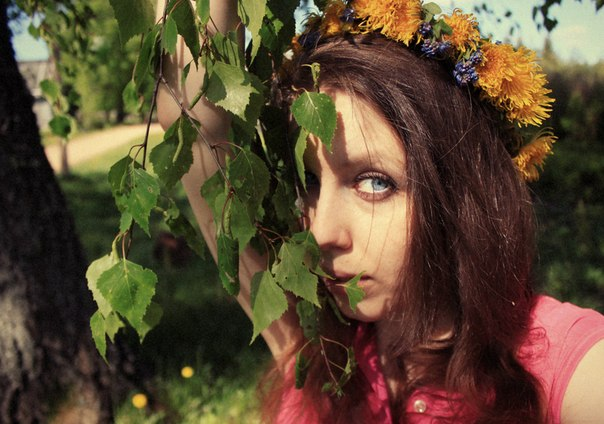

Запрашиваемая страница отсутствует, удалена или перемещена. Если Вы попали сюда, скопировав либо вручную вписав URL в адресную строку, проверьте правильность ввода, попутно любуясь некоторыми избранными иконами совершеннейшего Создания всех времён и народов. Ежели Вы здесь по ссылке с kristinita.ru или другого сайта автора Поиска Кристиниты, пожалуйста, сообщите об ошибке
.

For all matters relating to article please contact me by
or by GitHub, click «New Issue». With commentary in the style of new disgruntled Russian i reserve the right to dispose of my own discretion.